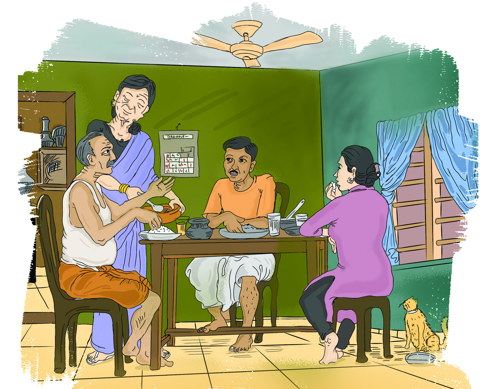
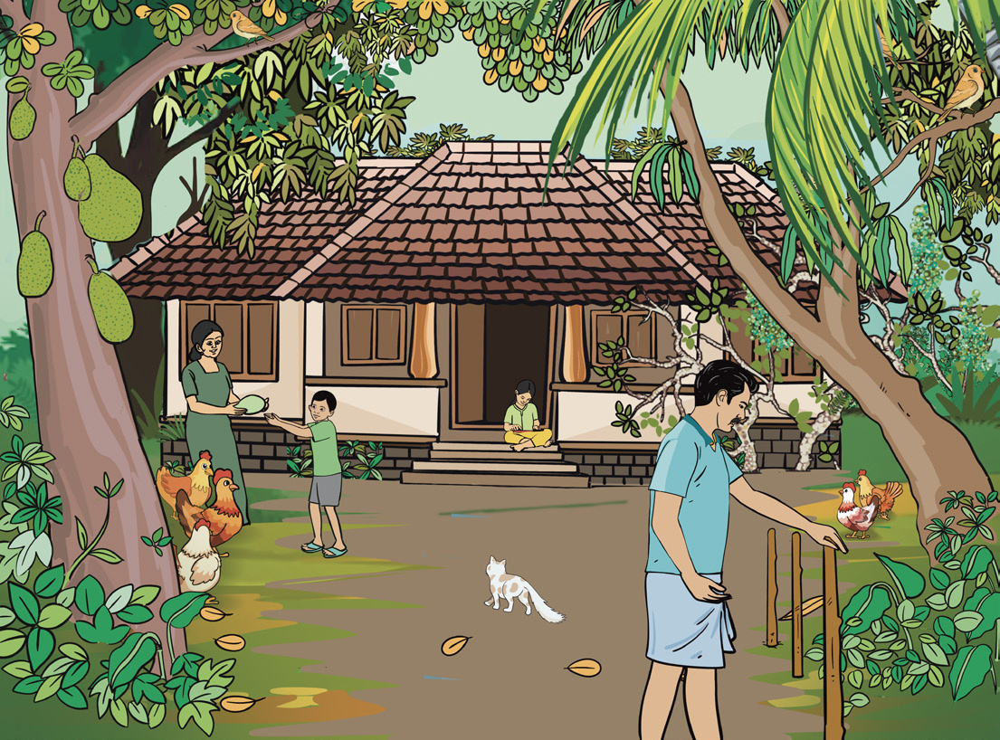
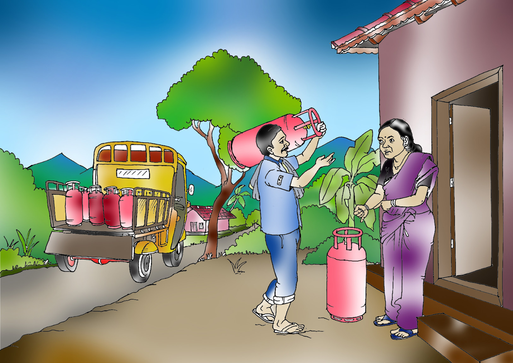
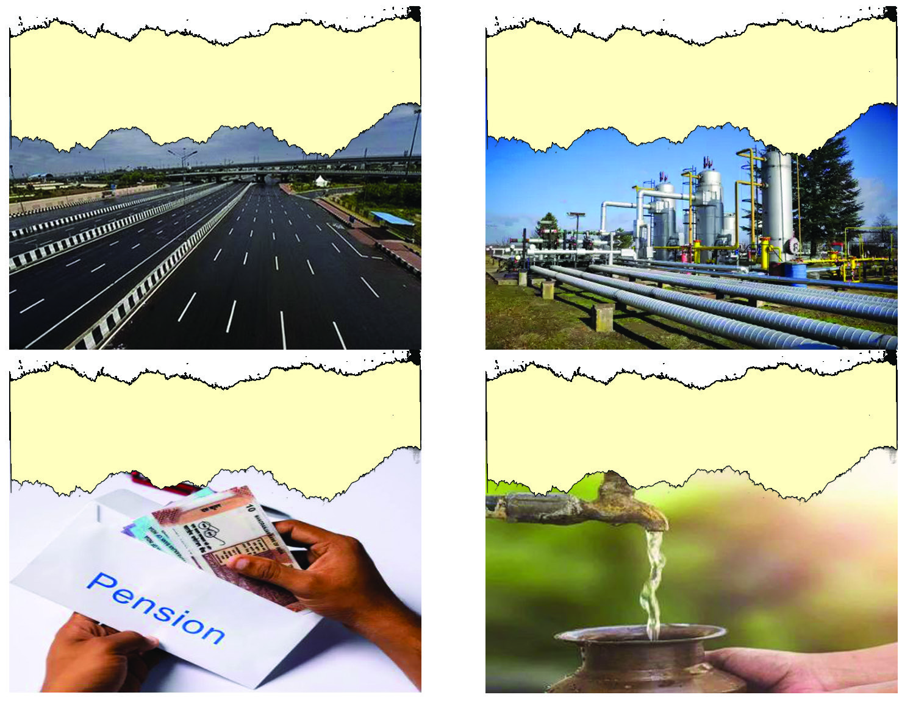
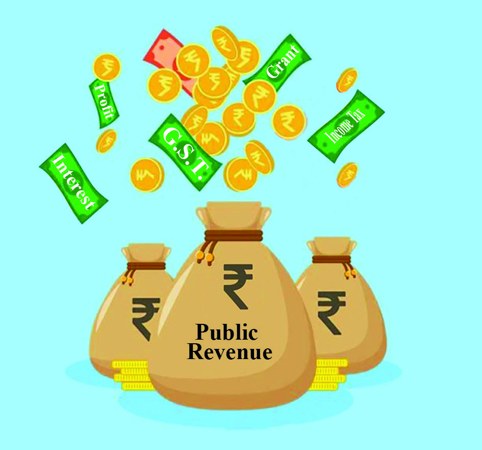
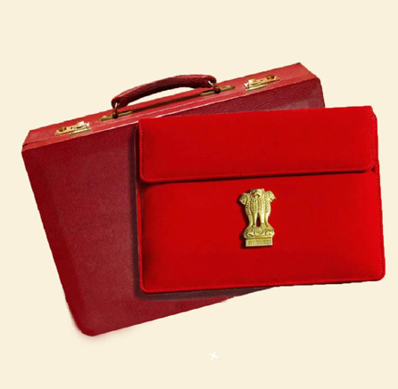

10
Dear, tomorrow, it’s Ammu’s
birthday. Shouldn’t we buy
her a new dress? Father’s
medicine is runout. The electricity
bill has also been issued. We need
to remit the monthly payment
for the chitty too.
Son, expenses
are high this month too.
Will you have to
borrow money
again?
If we get the chitty
we shall pay off all our
debts. After that, we
shall deposit the rest of
the money in the bank.
Budget : The True Record
of Development
Fig. 10.1
I’ve got the salary for this month.
I shall give the amount needed for
buying medicine for father and for
paying the electricity bill to mom.
I need to return the money that
I borrowed from my friend.
I shall buy a new dress for Ammu.
I’ll pay the chitty also.
Have you listened to the conversation of the members of this family?
Page 40

Page 41

Fig. 10.2
What are the expenses mentioned in the conversation?
l paying off debts
l
l
l
Which are the needs in our daily life that we spend money on?
l food
l health
l
l
l
l
Family Expenditure
The total amount spent by a
family for food consumption
and non-food consumption for
a particular period is called
the family expenditure. All the
expenditure of a family cannot
be fixed in advance. So, the
family expenditure may be
categorised as follows.
Family Expenditure
Expected Expenditure
Expected expenditure is the
expenditure that is expected in a
family for particular period. This
can be estimated as monthly and
annually.
e.g., food, electricity bills, etc
Unexpected Expenditure
The expenditure that a family cannot
fix in advance for a particular period
and which occurs accidentally is
termed unexpected expenditure.
e.g., natural disasters,
diseases, etc.
153
Budget : The True Record of Development
Page 42


Fig. 10.3
Complete the list by giving more examples for expected and
unexpected expenditure.
Expected Expenditure
Unexpected Expenditure
l education
l accident
Family Income
154
- Part 2
VII
Social Science
Page 43

The picture shows the different fields in which the members of Nikhil’s family are
engaged. Among them, there are people who engage in occupation and those who
do not. Let’s see who they are.
Family Members
Area of Activity/
Source of Income
Income
Yes/No
Nikhil
student
Father
tailoring
Mother
saleswoman
Grandfather
agriculture
Grandmother
pensioner
Family income is the total income of the family in a particular period from different
sources. By spending the income effectively, a family can develop the habit of
saving, deal with unexpected expenditure and improve the standard of life.
Which are the sources of income of your family?
Family Budget
Family budget is the financial plan that is prepared based on the expected income
and expenditure of a family in a particular period. The family budget that can be
prepared on a monthly or annual basis will differ according to the size, income and
needs of the family. The family budget should be planned by considering opinions
of all the members of the family. By ensuring that the suggestions of the family
budget are followed in fixed intervals, the family can attain financial safety and
welfare.
155
Budget : The True Record of Development
Page 44

The stock reached late.
There’s a slight hike
in the price.
It’s been a
week since
we booked.
What
can I do?
If the price is
increased like this,
what shall we do?
Here, only we know
how we make both
ends meet in life.
Fig. 10.4
Let’s listen to the conversation.
You might have noticed from the above conversation how the unexpected price
increase affects the family buget.
Accordingly, find out the other factors that affect your family budget.
l increase in electricity bill
l
l
l
The family income becomes stable when the income is more than the expenditure,
or when the income and the expenditure are equal.
How can we reduce the expenditure of the family?
l
use locally available resources for food.
l
cultivate your own food resources.
l
use public distribution system and fair price sale counters to the maximum
extent possible.
l
l
156
- Part 2
VII
Social Science
Page 45


Given below is the model of the monthly budget of a family.
No.
Income
Amount
No.
Expenditure
Amount
1
wages
9500
1
rice, provisions
5000
2
salary
10000
2
milk, vegetables
1200
3
pension
3200
3
fish, meat
2000
4
agriculture
2100
4
electricity
1100
5
clothing
1500
6
medical expenses
1000
7
education
1500
8
entertainment
500
9
travel
2300
10
loan repayment
5000
11
phone, newspaper, gas
1500
12
agriculture
1000
13
miscellaneous
2100
Total
24,800
Total
25,700
Deficit
900
l
What is the specialty of this family budget?
l
What suggestions can you give to turn this family budget into a surplus one?
What are the benefits of a family budget? Add more to the table.
Recognising different
sources of income
Adjusting the expenditure to
match the income
Moderate expenditure
is practised
157
Budget : The True Record of Development
Page 46


The news headlines of various welfare and developmental activities of the
government are given above.
The government needs a huge amount of money to carry out these activities. Apart
from these, what other activities does the government spend money on?
l salary
l construction of hospitals
l interest
l social welfare schemes
l expenses for defence
l
Discuss what welfare and developmental activities have been done
in your area using government funds and prepare a note.
Public expenditure is the amount spent by the government for developmental and
non-developmental activities. The public expenditure increases as the government
expands its activities.
National Highway
Development to reality
GAIL pipe line completed
Jaljeevan Mission Project : Fund to
solve shortage of drinking water
Social welfare pension
distributed
Public Expenditure
Fig. 10.5
158
- Part 2
VII
Social Science
Page 47

The public expenditure can be classified into two categories.
Developmental Expenditure
Expenditures directly related to economic and social development of the country are
called developmental expenditure. They contribute greatly to the economic growth
of a country by stimulating its real economic condition and production. So, these
developmental expenditures are also known as production costs. The expenditure
spent for constructing roads, bridges, harbours and to start new enterprises and
educational institutions are considered as developmental expenditure.
Non-Developmental Expenditure
Non-Development Expenditure is the one incurred by the government on a regular
basis for national interest and public services. Expenses involved in defence,
interest, pension, epidemic and natural disasters come under this.
Categorise the following expenditure as developmental expenditure
and non-developmental expenditure and list them in the table given
below.
l interest
l construction of roads
l energy generation
l construction of schools
l epidemic
l war
l welfare pension
l defence
l liability
l public administration
l subsidies
l industries
Developmental Expenditure
Non-Developmental Expenditure
159
Budget : The True Record of Development
Page 48


The public expenditure of the Central Government from 2018-19 to 2022-23
is given below.
Analyse the graph on the public expenditure of the government and
write your conclusions.
Fig. 10.7
Public Revenue
The government needs a huge
amount of money for developmental
and welfare activities. The public
revenue is the wealth that the
government collects from various
sources to satisfy these needs. This is
an important factor of the government
budget. Now, think about the sources
of revenue of the government. The
government makes revenue from
two major sources. Look at the chart
given below.
Fig. 10.6
Public Expenditure (Lakh in Crores)
0
2018-19
Excerpts from Union Budget in 2023
23.14
2019-20
26.87
2020-21
35.09
2021-22
37.93
RE 2022-23
2018-19
2019-20
2020-21
2021-22
RE 2022-23
41.88
5
10
15
20
25
30
35
40
45
Year
160
- Part 2
VII
Social Science
Page 49

Direct tax
Direct tax is the tax
remitted by the person
on whom tax is levied.
This means that the
tax-payer himself bears
the burden of the tax.
Income tax and building
tax are examples.
Indirect tax
Here, the tax levied on
one individual is paid
partially or completely
by another.
Sales tax and
entertainment tax are
examples of
indirect tax.
Public Revenue
Tax revenue
Revenue from taxes
This is the revenue from sources
other than taxes. Fee, fine, grants,
profit and interest are examples.
Non-tax revenue
Goods and Services Tax (GST)
Goods and Services Tax (GST) is a unified indirect tax that came into effect from
July1, 2017 after the 101st amendment of the Constitution, to implement the principle
of a unified tax for the nation. If the revenue from sales is more than the amount fixed
by the government in a financial year, the traders must avail GST registration. At
present, the consumer has to pay GST at the rates of 0%, 5%, 12%, 18% and 28%.
The GST thus collected from the consumers has to be remitted by the traders, to the
government. The rates of GST can be changed in due course of time.
Tax
Tax is the amount of money that the public should remit to the government
to bear the expenses of welfare activities and developmental activities which
are carried out in public interest. The person who remits taxes is called a tax
payer.
Find more examples of direct and indirect taxes and list them.
161
Budget : The True Record of Development
Page 50

UNION BUDGET
TODAY : STATES EXPECT
BENEFITS
STATE BUDGET :
PRESENTATION IN THE
ASSEMBLY TODAY
Fig. 10.8
Budget
Balanced Budget
Deficit Budget
Surplus Budget
More income, less
expenditure
Equal income and
expenditure
Less income, more
expenditure
162
- Part 2
VII
Social Science
Have you noticed the news headlines? The central government and state
governments usually prepare budgets.
Budget
The budget is a financial document of the
expected income and expenditure by the
government for a specific financial year. In our
country, the budget is prepared for one financial
year starting from April 1st to March 31st. The
finance minister presents the budget. As per
Article 112 of the Constitution of India, the
union budget is also the annual financial audit
of the country.
Budgets can be divided into three categories on the basis of revenue and expenditure.
Types of Budget
Page 51




Individuals
Government Institutions
The Evolution of Budget
The word ‘budget’ originated from the French word ‘Boget.’ It means
‘a small bag’ or ‘sack.’ The word ‘budget’ indicates ‘a bag that contains
the financial documents of the government.’ The first presentation of
the budget was held in the 11th century. R. K. Shanmugham Chetty who
was the Finance Minister of India, presented the first union budget of
the country.
Fig. 10.9
Public Debt
The government has to take loans to materialise the developmental and welfare
activities and to meet various administrative needs when the income is not sufficient
to satisfy various needs. The loans thus availed by the government are known as
the public debt. Loans are taken from within and outside the country. These debts
are known as domestic debts and foreign debts respectively.
Internal debt: The loans availed by the government from individuals and
institutions inside the country are known as domestic debt.
Fig. 10.10
163
Budget : The True Record of Development
Page 52

External debt : Foreign debt is the loan availed from other countries and
international organisations.
International Institutions
Fig. 10.11
Foreign Governments
The productive use of these loans helps in materialising welfare and developmental
activities, thereby increasing revenue and reducing public debt.
Fiscal Policy
Fiscal policy is a comprehensive government policy concerning the public
revenue, public expenditure and public debt. This policy prepared by the finance
department is implemented through the budget. It is also a policy that gives
guidelines to the government to improve the current financial situation and attain
financial stability.
Accelerate the
economic growth
Create job
opportunities
Regulate additional
expenditure
Eliminate the inequality
in the distribution of revenues
Objectives of Fiscal Policy
164
- Part 2
VII
Social Science
Page 53

Organisations, local self-government institutions, states and the nation help to
materialise developmental and welfare activities and attain the goal of sustainable
development by preparing and working on budgets.
Extended Activities
l
Prepare your family budget after collecting details of income and expenditure
from your parents.
l
Collect the news report on the developmental and welfare activities of the
state and central governments and prepare a magazine.
l
The GST rates that we pay on the receipt of goods and services are given below.
Findout the services and goods on which each tax is levied and complete the
table given below.
Tax rates
Goods
Services
0%
5%
12%
18%
28%
l
The local self-government institutions also levy different types of taxes just
like the state and central governments. Search, findout and list them.
165
Budget : The True Record of Development